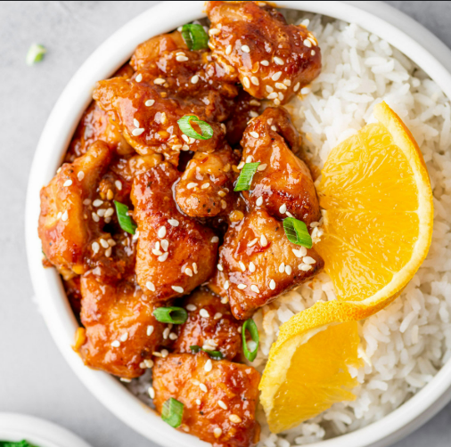
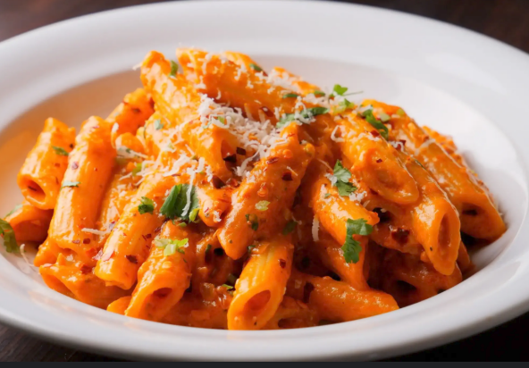
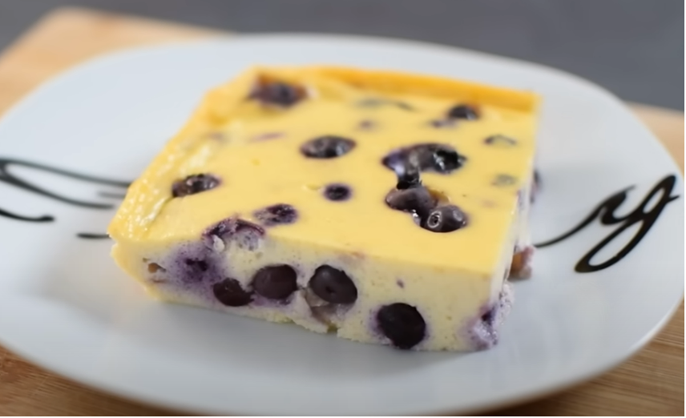
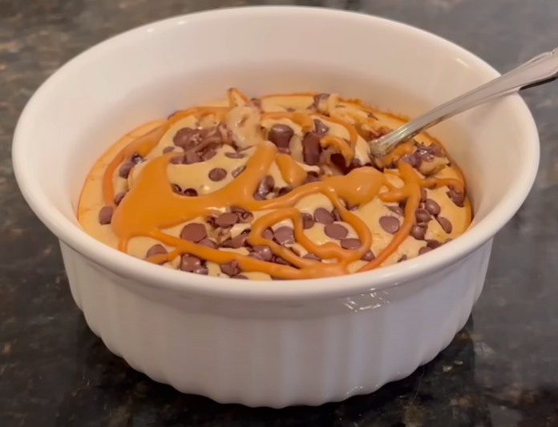

Home
Recipe Archive Overview

Dinners
My Classic Dinners I have compiled since Sophomore year of College.

Snacks
Delicious Snacks with good Macros.

Community
Share and discover recipes from the community.